26 SEPTEMBER 2026 · CURRENT LOCAL BUILD
Bondtite UI/UX audit
Verdict: visually more coherent, but not ready to sign off on conversion usability. The highest-priority work is preserving advisor progress, making enquiry completion visible and unifying document access. Further decorative animation would not resolve these issues.
Read-only audit of the site’s UI, with two explicitly labelled local test submissions. No application code changed. Desktop 1280 × 720 and mobile 390 × 844 in the in-app browser. An initial 1440px screenshot was discarded because its capture bounds were unreliable; the desktop landing capture was replaced at 1280px.
Priority findings
P1 · FINDING 1Contact success is out of view
Mobile contact submission saves successfully, but removing the long form leaves the viewport at the footer. The success message was 878px above the viewport after submission. This reproduces the user’s concern that submitting does nothing.
Recommended change: Focus a success heading and bring it into view after the saved response. Preserve entered data on failure. Replace “lead inbox” with what the customer should expect next.
Evidence: 15-contact-mobile, 16-contact-confirmation in the captured steps below.
P1 · FINDING 2Advisor answers disappear when returning from a product
Selected Plywood + Laminate + Kitchen/bathroom, received Hydra+, opened its product, then used Back (past the product anchor entry). The advisor returned with no selected inputs. The old scroll position put the user near the footer.
Recommended change: Persist non-sensitive choices in the URL or session state and restore the result and an appropriate scroll position. Add a clear restart control. If browser storage is introduced, update the Cookie Policy.
Evidence: 11-advisor-result-mobile, 14-advisor-back-reset in the captured steps below.
P1 · FINDING 3The same Hydra+ document has two conflicting journeys
Resources labels Hydra+ technical/safety documents “Available on request” and offers Request TDS / SDS, while the Hydra+ product provides an immediate gated TDS download. Users taking the resource route are unnecessarily sent to an enquiry.
Recommended change: Use the same document-availability data and gated TDS component in both places. Keep SDS separate where it must be requested.
Evidence: 21-resources, 22-tds-mobile in the captured steps below.
P2 · FINDING 4Advisor coverage is narrower than the catalogue suggests
The material-first flow offers Wood, Plywood, MDF, Laminate, Foam, Leather and Acrylic. Metal, stone, ceramic and general plastic are absent although catalogue products cover broader work. The generic “Choose materials” entry does not explain that coverage.
Recommended change: Either explicitly scope the advisor or add manufacturer-verified journeys for the broader range. Provide named material choices that can lead to helpful human support even when no verified automatic match exists. Do not guess adhesive suitability.
Evidence: 27-advisor-material-coverage, 08-advisor-start in the captured steps below.
P2 · FINDING 5Comparison does not expose the decisive differences
Deluxe versus Aqua shows identical category and listed-material rows, prose summaries and pack sizes. It is readable but gives limited help deciding between adjacent wood adhesives.
Recommended change: Add verified use cases, water-resistance classification, setting/open-time guidance and suitable applications where available. Emphasise differences and mark genuinely unavailable data plainly.
Evidence: 07-compare, 04-catalogue in the captured steps below.
P2 · FINDING 6Mobile contact entry asks for attention before action
At 390 × 844, the headline, introduction and decorative subheading use much of the first screen. The first form field begins about 640px down. The form then asks for several optional fields before the actual project details.
Recommended change: Reduce the mobile introduction and move the essential fields higher. Group optional information behind a clearly labelled optional area. Show a customer-facing confirmation with a readable reference.
Evidence: 15-contact-mobile, 17-contact-success-content in the captured steps below.
P2 · FINDING 7Secondary product content does not match Hydra quality
Quick Gel’s hero says “Applications include Gel application, Controlled application.” This names a format rather than a useful job or material. “Cyanoacrylates” also replaces the friendlier “Instant adhesives” terminology used in the catalogue. Rendered page text contains workbook-oriented fallback wording.
Recommended change: Apply the same useful information standard across products: what it joins, where it is used, what differentiates it and verified instructions. Use customer terminology first, chemistry as supporting detail.
Evidence: 26-secondary-product, 12-product-mobile in the captured steps below.
P2 · FINDING 8Small utility typography weakens practical reading
The mobile catalogue filter labels measure 10px and comparison labels 11px. Product-card descriptions and several helper links are visually small relative to large headings and images. Compare targets do measure 44px high, so small text is a readability issue, not a confirmed target-size failure.
Recommended change: Raise useful labels to 12–14px and core reading text to approximately 15–16px, preserving a clear hierarchy. Check at 200% zoom and with real users before declaring accessibility conformance.
Evidence: 24-catalogue-mobile, 04-catalogue in the captured steps below.
P2 · FINDING 9Technical resources have weak navigation visibility
The Resources page exists and contains a document selector and guides, but no Resources destination was present in the inspected primary navigation or footer navigation. A technical visitor must discover an indirect route or already know the URL.
Recommended change: Add a clearly named Technical resources link in the footer and an appropriate product/support navigation location. Avoid expanding the primary navigation indiscriminately.
Evidence: 21-resources, 03-mobile-menu in the captured steps below.
P2 · FINDING 10Keyboard users lack a skip-to-content route
The rendered homepage contains a main landmark but no skip link. Keyboard users must pass through repeated navigation before reaching the page’s task. Menu Escape focus return works.
Recommended change: Add a focus-visible skip link and a stable main-content target across public templates. Audit full keyboard order and screen-reader announcements separately.
Evidence: 01-home-desktop, 03-mobile-menu in the captured steps below.
P2 · FINDING 11Obviously unusable phone numbers pass form validation
Both audited contact and TDS submissions accepted 0000000000 and stored their explicitly labelled test records. This verifies storage, but also demonstrates that the input check is mostly length and character validation.
Recommended change: Reject obvious repeated-digit placeholders with a helpful inline message while keeping legitimate international formats supported. Do not add OTP friction unless the business requires verified phone ownership.
Evidence: 17-contact-success-content, 23-tds-confirmation in the captured steps below.
P3 · FINDING 12Product navigation needs a clearer mobile overflow affordance
The sticky section navigation is usable and Technical details receives aria-current=location. At 390px it scrolls horizontally, with the edge of Overview clipped after moving across the strip. The final destination is readable after scrolling finishes.
Recommended change: Keep the active tab visible, provide subtle edge fades and sufficient target spacing, and verify anchor behaviour with reduced motion. Avoid making the whole page scroll horizontally.
Evidence: 13-product-technical-mobile, 12-product-mobile in the captured steps below.
P3 · FINDING 13Some supporting copy still describes the removed input flow
Furniture & joinery tells users to “Describe your task” beside the advisor link, but the current advisor begins with selections rather than free text. This is a small but avoidable expectation mismatch.
Recommended change: Use “Choose your job or materials” consistently and review other advisor entry points for outdated promises.
Evidence: 18-application-desktop, 08-advisor-start in the captured steps below.
Captured journey, step by step
STEP 1 · Healthy foundationLanding page
Clear adhesive context, visible advisor and range links, consistent palette. Mobile hero fits without observed horizontal overflow. Tiny product-caption copy adds little value.
View screenshots
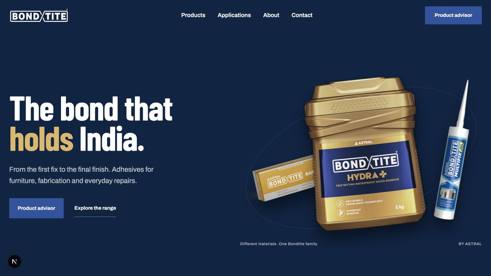
01-home-desktop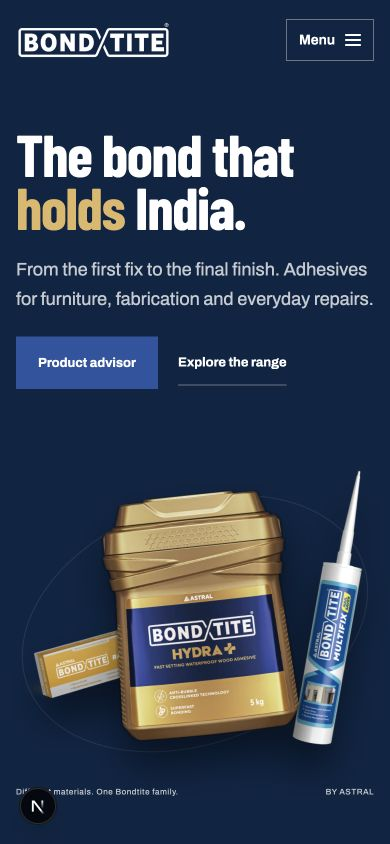
02-home-mobileMobile navigation
Menu opens with all main destinations; Escape closes it and returns focus to Menu. No skip link was found on the homepage.
View screenshots
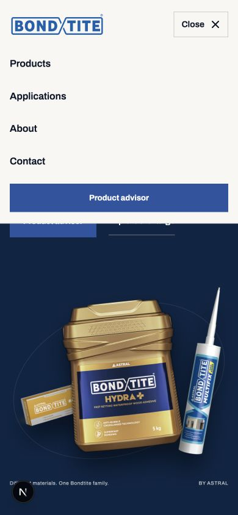
03-mobile-menuCatalogue and search
Hydra search reduced the result count; nonsense search returned an explicit empty state and recovery control. Clear filters restored the range. Mobile filters fit, but utility labels are very small.
View screenshots
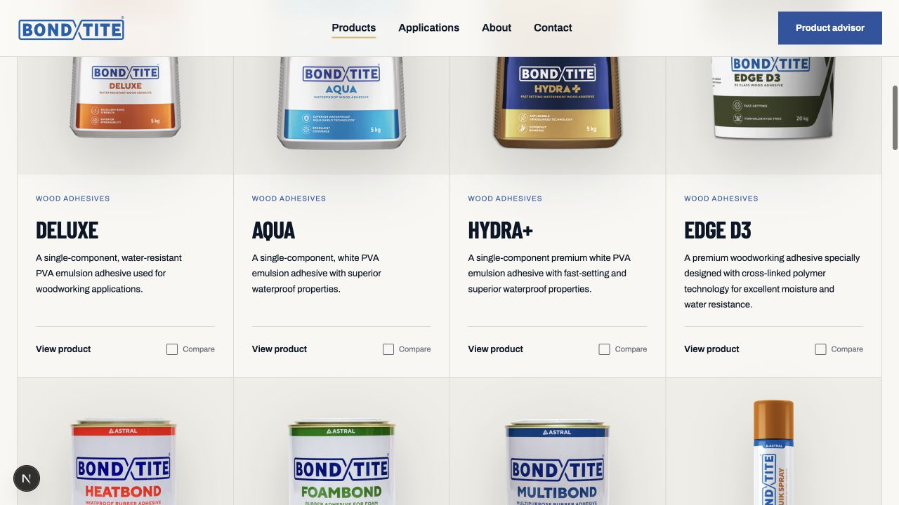
04-catalogue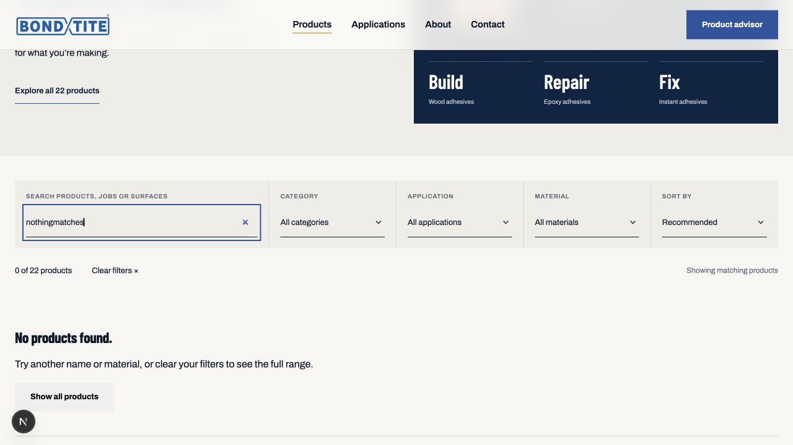
06-empty-search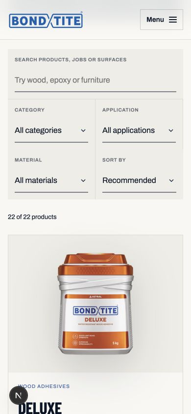
24-catalogue-mobileProduct comparison
Two selected products open a readable comparison dialog with labelled close control and initial close-button focus. The content does not yet expose enough decisive differences.
View screenshots
Product advisor
Material chips produce a Hydra+ recommendation with reason, application guidance and source link. Back from the product loses the selected answers and leaves the page at a confusing scroll location. Coverage is limited.
View screenshots
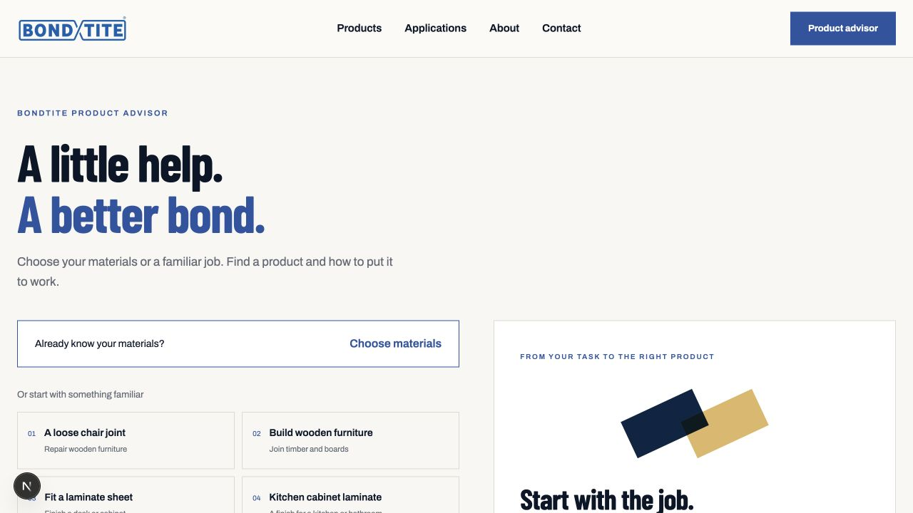
08-advisor-start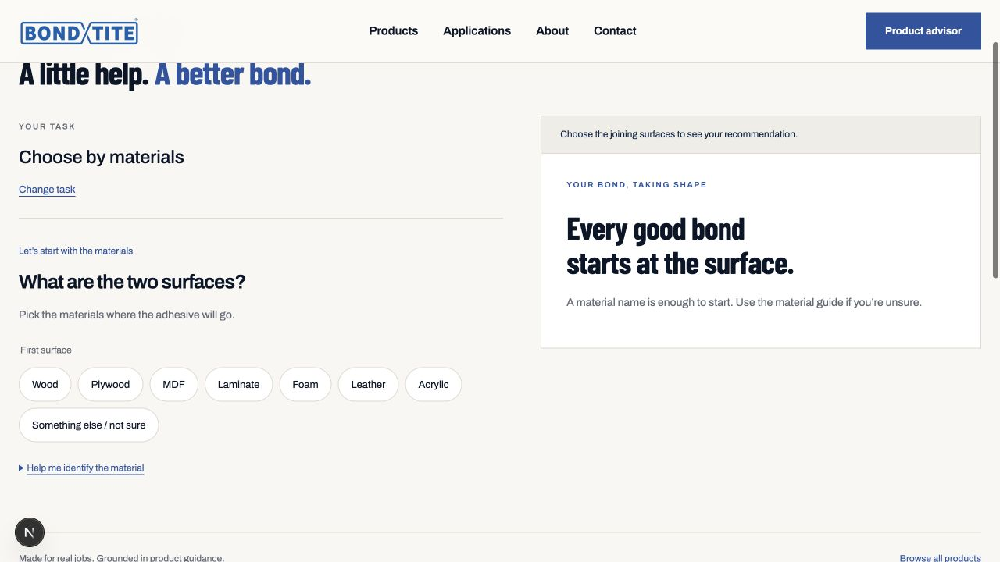
27-advisor-material-coverage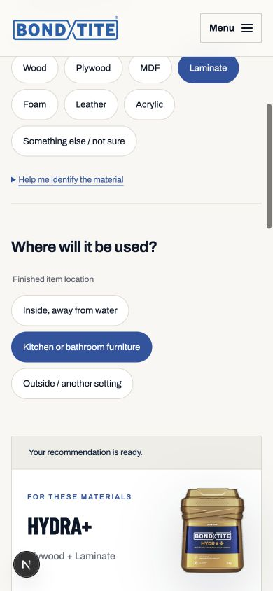
10-advisor-mobile-answer-location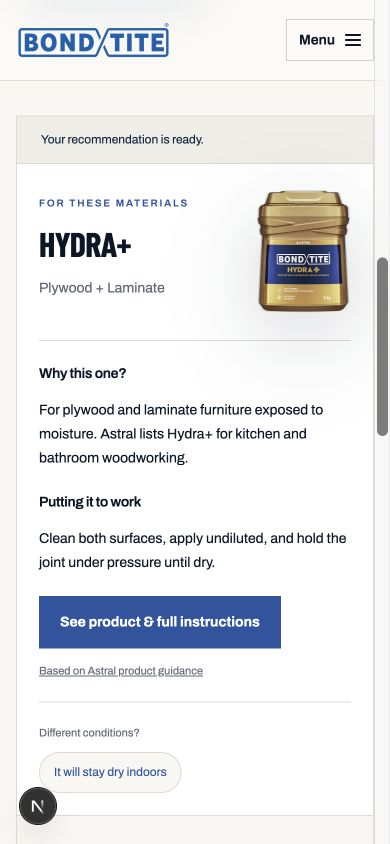
11-advisor-result-mobile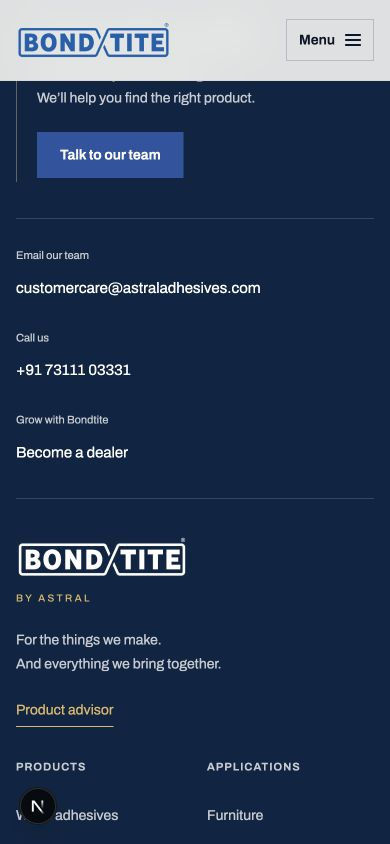
14-advisor-back-resetProduct detail
Hydra image, actions, specifications and section navigation work on mobile. The active section is identified semantically. Quick Gel shows weaker information and inconsistent category terminology.
View screenshots
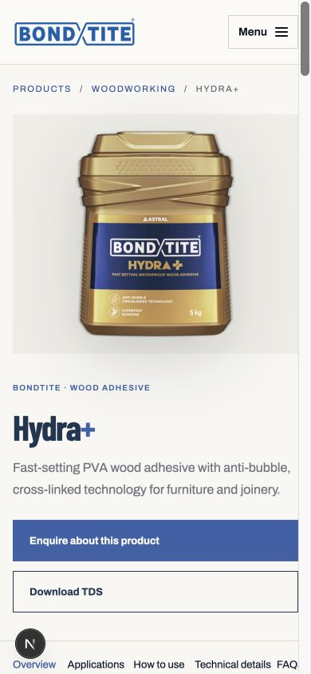
12-product-mobile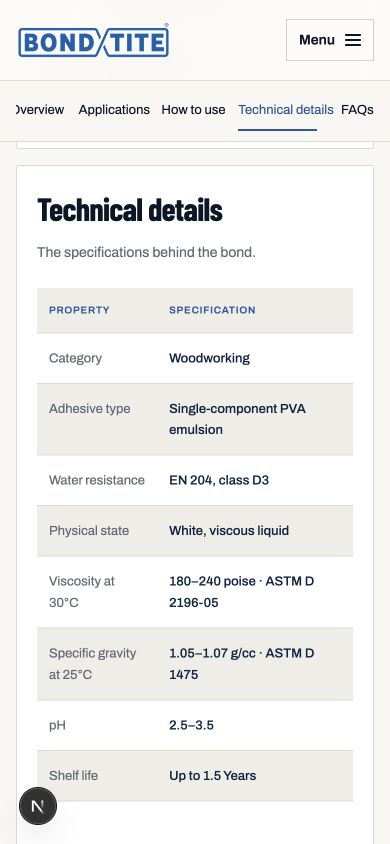
13-product-technical-mobile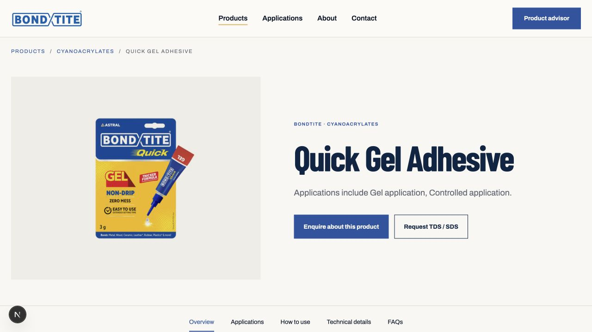
26-secondary-productContact form
Empty submission focused the required name field. A labelled local test lead was successfully stored, but the resulting viewport showed the footer rather than success. Scrolling up revealed the confirmation.
View screenshots
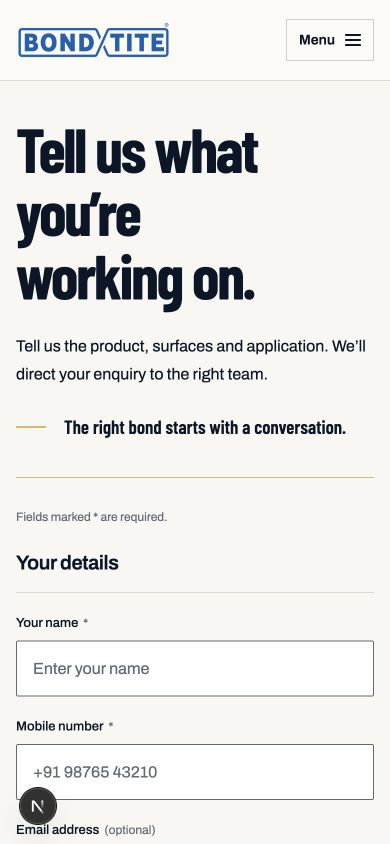
15-contact-mobile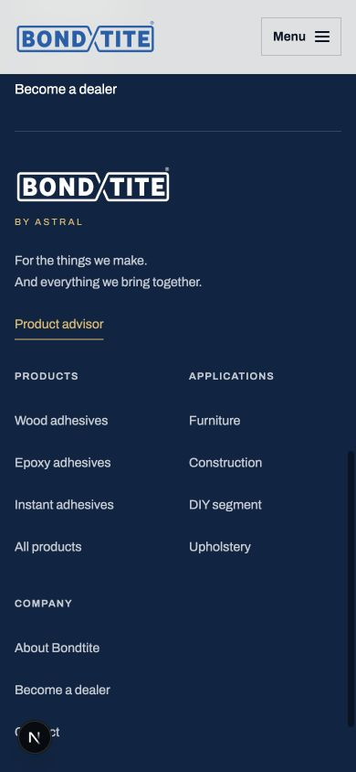
16-contact-confirmation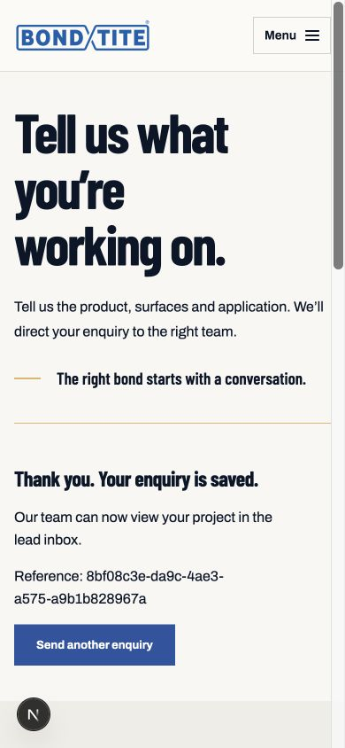
17-contact-success-contentTDS request
A labelled local test submission stored one TDS record and showed a distinct success state. Keyboard focus moved to Close. Download again was available. Actual PDF opening and delivery across external browsers were not verified.
View screenshots
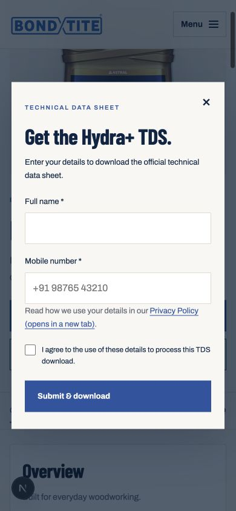
22-tds-mobile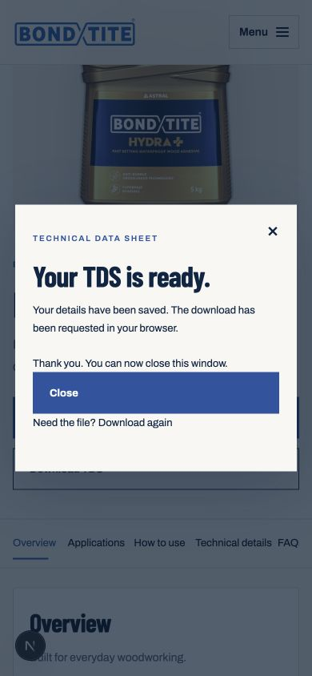
23-tds-confirmationApplication and category entry
Both layouts use the same outer alignment and readable content groups. The application page’s advisor description refers to a removed text-entry flow. Product choices appear after substantial introductory space.
View screenshots
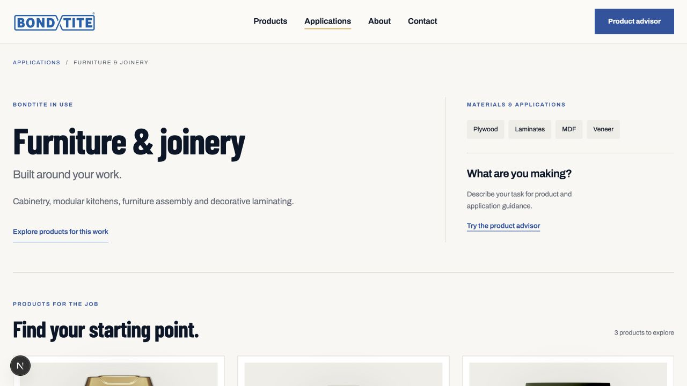
18-application-desktop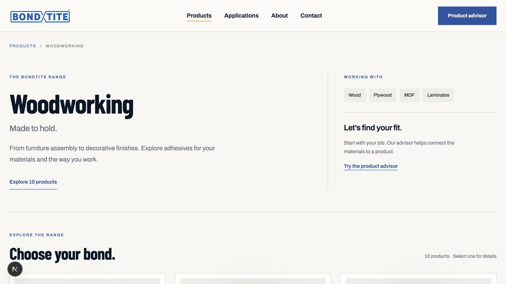
19-category-desktopAbout page
Brand statement heading and body now have a balanced hierarchy. The timeline heading starts on the same left axis as other headings. This was a sampled section, not a complete timeline-motion test.
View screenshots
Technical resources
Document selector is visible, but Hydra+ is presented as request-only despite its working download elsewhere. Resource navigation is hard to discover.
View screenshots
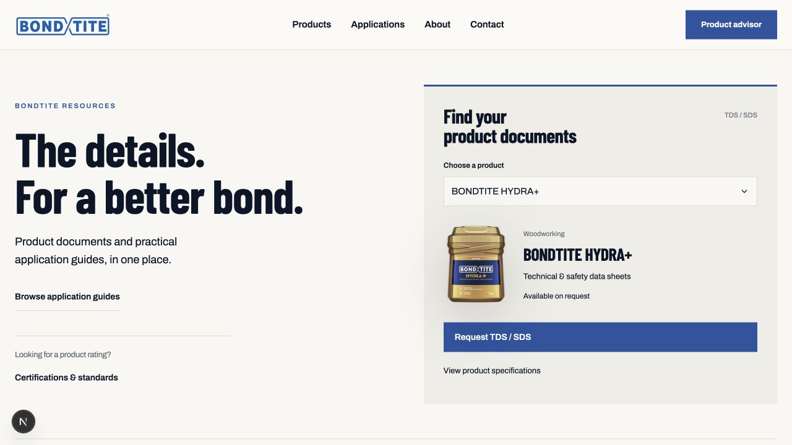
21-resourcesPolicies and footer
Mobile policy navigation and body copy fit the screen. Footer contact and legal links are visible. Contact information repeats between the contact page and footer. The mobile policy contents list consumes much of the first screen but remains usable.
View screenshots
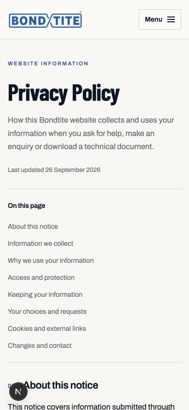
25-policy-mobile14-advisor-back-resetRecommended order
- Fix contact success focus/scroll, advisor state restoration and shared TDS availability.
- Improve comparison evidence, advisor coverage and secondary product content.
- Reduce mobile entry friction, raise utility text sizes, add resource navigation and a skip link.
- Then tune section-navigation affordances and supporting copy.
Evidence limits
This is a representative journey audit, not every combination of all 22 products. The audit did not measure Core Web Vitals or frame rates, test real devices, run a screen reader, verify all colour contrasts, test 200% zoom/reduced-motion emulation, induce offline/server-error states, or validate external-browser downloads. Therefore it is not a WCAG conformance or production-readiness certificate. Native required-field validation, selected-state semantics, menu Escape handling and TDS success focus were directly checked.
Local test records are named LOCAL UI AUDIT TEST and LOCAL UI AUDIT TDS. Each was confirmed once in the database. They have been left in place and do not represent customers. The visible Next.js development badge is tooling, not a design finding.